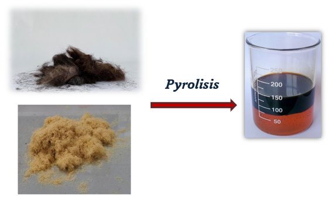

HairX Biodiesel
Our innovative biodiesel produced from human hair waste offers a sustainable alternative to traditional fossil fuels with comparable energy output and reduced environmental impact.
Production Process
1. Collection
We partner with salons and barbershops to collect hair waste that would otherwise end up in landfills.
2. Preparation
The hair is cleaned and mixed with corn stover (corn stalks) to create an optimal feedstock blend.
3. Pyrolysis
Our specialized reactor heats the mixture to 528±20°C under controlled conditions to break down the organic material.
4. Refinement
The resulting bio-oil is purified and tested for quality before being distributed as biodiesel.
Product Specifications
- High calorific value comparable to conventional diesel
- Lower sulfur content than fossil diesel
- Reduces CO2 emissions by up to 80% compared to petroleum diesel
- Compatible with existing diesel engines with minimal modification